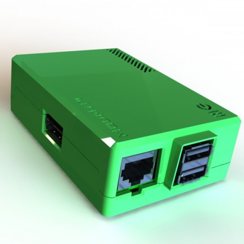
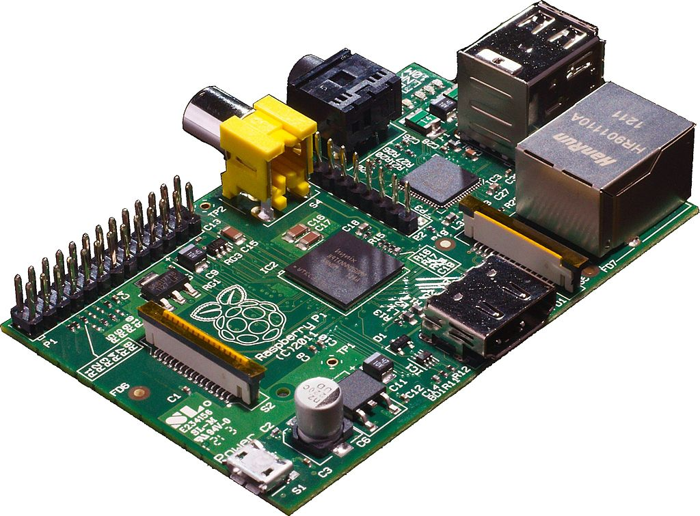
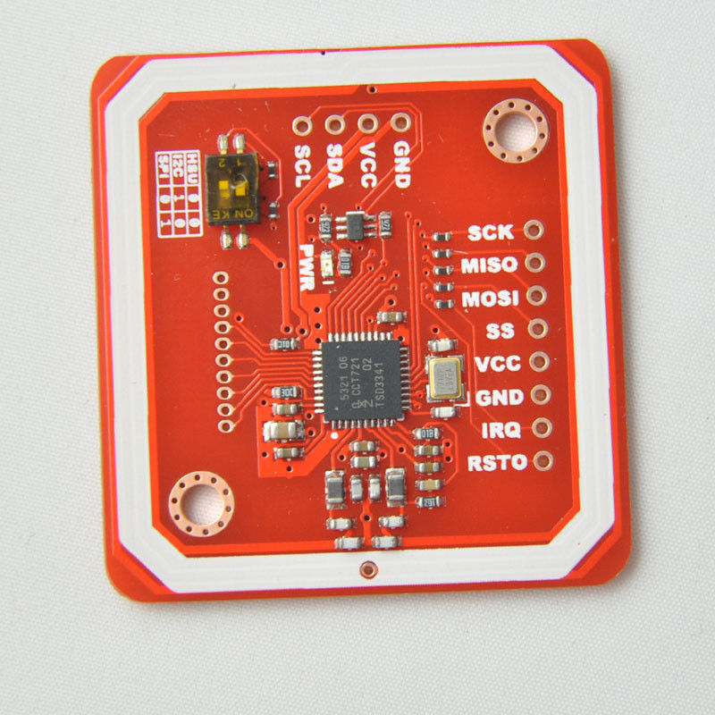
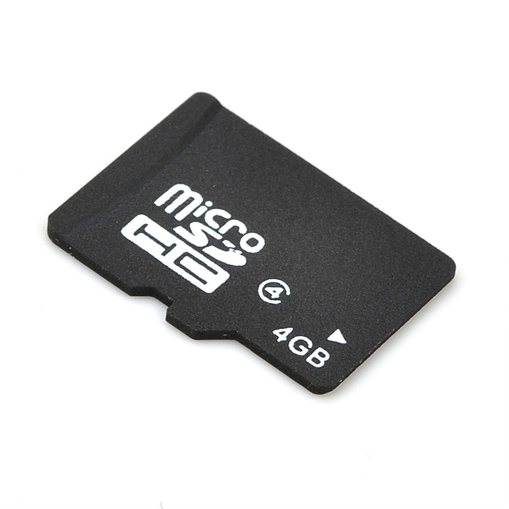

- 700 MHz ARM11
- 512 MB RAM
- 2x USB 2.0
- RCA, HDMI
- 3.5 mm jack, HDMI
- 10/100 Ethernet
- 26 GPIO Pins
- ~120 LT

- PN532 NFC Arduino Module V3
- Reader / Writer / Card
- I2C / SPI / HSU (UART)
- ~60 LT

Get Nearby Tag
Play/Seek
Periodically Save State
Recover On Startup
Assign Tag To a File